물류관리사-1교시 (2017-07-01 기출문제)
1과목: 물류관리론
1. 물류관리에 관한 설명으로 옳지 않은 것은?
- 상적유통과 구분되는 물류는 마케팅의 물적유통(physical distribution)을 의미한다.
- 물류합리화를 통한 물류비 절감은 소매물가와 도매물가 상승을 억제하는데 기여한다.
- 물류합리화는 상류합리화에 기여하며, 상거래 규모의 증가를 유도한다.
- 물리적 흐름의 관점에서 물류관리의 목표는 노동투입을 증가시키는 것이다.
- 물류관리의 진화된 기법으로서 참여기업 간 조정과 협업을 강조하는 공급사슬관리의 중요성이 증가하고 있다.
(정답률: 69%)

2. 물류관리의 역할과 의의에 관한 설명으로 옳은 것은?
- 상거래의 결과로 발생하는 물류관리는 제품의 이동이나 보관에 대한 수요를 유발시켜 유통기능을 완결시키는 역할을 한다.
- 형태 효용은 생산, 시간과 장소 효용은 마케팅, 그리고 소유 효용은 물류관리와 밀접한 연관성이 있다.
- 물류비용은 기업이 생산하는 제품의 가격경쟁력에 영향을 미치기 때문에 물류활동을 효율화하고 물류비용을 절감하는 것이 중요하다.
- 물류발전을 통하여 지역 간 균형발전을 도모할 수 있으나 모든 지역에서 교통체증 증가로 이어져 생활환경이 악화된다.
- 물류활동은 판매촉진을 위한 고객서비스의 향상과 물류비용의 절감이라는 상반된 목표를 추구함으로 수송, 보관, 하역 등 기능별 시스템화가 요구된다.
(정답률: 59%)
3. 공급자관계관리(SRM: Supplier Relationship Management) 전략 실행에 관한 설명으로 옳지 않은 것은?
- SRM 솔루션은 도입기업과 공급자간 거래 프로세스의 자동화에 기여한다.
- SRM 소프트웨어 도입을 통하여 공급자와 사용기업의 정보 및 프로세스 흐름의 가시화 수준을 높일 수 있다.
- SRM 솔루션은 내부 사용자와 외부 파트너를 위해서 다수의 부서와 프로세스 등을 포괄할 수 있도록 설계된다.
- SRM 솔루션의 운영을 통하여 공급자와 사용기업의 비즈니스 프로세스가 통합되어 모든 공급자들과 장기적인 협업관계 형성을 가능하게 한다.
- SRM 전략실행을 통하여 고객중심의 대안을 신속히 제공하게 되어 시장변화에 대한 대응력을 향상시킬 수 있다.
(정답률: 31%)
4. 중앙집중식 구매조직의 장점으로 옳지 않은 것은?
- 구매를 한 곳으로 집중하여 수량할인과 배송의 경제성을 얻을 수 있다.
- 구매인력이 하나의 부서에 집중되기 때문에 업무기능의 중복 가능성을 줄일 수 있다.
- 보편적으로 관료주의적 행태를 줄이게 되어 더욱 신속한 대응을 가능하게 하고 구매자와 사용자 간 원활한 의사소통에 도움이 된다.
- 다수의 공급업자 관리가 일원화되어 개별 공급업자에 대하여 높은 수준의 협상력을 가질 수 있다.
- 구매집중화가 이루어져 부서 내 구매경쟁 문제를 방지할 수 있다.
(정답률: 60%)
5. 제4자 물류(4PL: Fourth Party Logistics) 기업의 유형에 관한 설명으로 옳은 것은?
- 시너지플러스(synergy plus) 유형은 복수의 서비스제공업체를 통합하여 화주에 게 물류서비스를 제공한다.
- 솔루션통합자(solution integrator) 유형은 복수의 화주에게 물류서비스를 제공하는 서비스제공업체의 브레인 역할을 수행한다.
- 거래파트너(trading partner) 유형은 사내 물류조직을 별도로 분리하여 자회사로 독립시켜 파트너십을 맺는다.
- 산업혁신자(industry innovator) 유형은 복수의 서비스제공업체를 통합하고 산업군에 대한 통합서비스를 제공하여 시너지효과를 유발한다.
- 관리기반 물류서비스 유형은 운송수단이나 창고시설을 보유하지 않고 시스템 데이터베이스를 통해 물류서비스를 제공하거나 컨설팅서비스를 제공한다.
(정답률: 25%)
6. 전사적자원관리(ERP: Enterprise Resource Planning) 시스템에 관한 설명으로 옳지 않은 것은?
- ERP시스템은 기업의 모든 활동에 소요되는 인적, 물적 자원을 효율적으로 관리하는 역할을 한다.
- ERP시스템 운영은 전체 공급사슬의 가시성을 증가시키며 재고를 줄이는데 기여한다.
- ERP시스템을 활용하여 회계, 생산, 공급, 고객주문 등과 관련된 정보를 통합할수 있다.
- ERP시스템은 생산 및 재고계획, 구매, 창고, 재무, 회계, 인적자원, 고객관계관리 등과 같은 다양한 업무의 개별 시스템화를 추구한다.
- ERP시스템은 채찍효과(bullwhip effect)를 줄이고 공급사슬 참여자들의 효율적 물류활동 실행에 기여한다.
(정답률: 66%)
7. 물류서비스에 관한 설명으로 옳지 않은 것은?
- 물류서비스 품질은 고객이 물류서비스를 제공받는 과정에서 알게 되는 것과 물류서비스가 완료된 이후의 성과 간 차이로 결정된다.
- 물류서비스의 거래 전 구성요소는 고객서비스에 관한 기업의 정책과 연관되어 있으며, 기업에 대한 고객인식과 고객의 전반적인 만족에 영향을 미칠 수 있다.
- 운송서비스는 서비스 프로세스 매트릭스에서 서비스공장(service factory)으로 분류된다.
- 고객서비스 수준이 결정되어 있지 않다면 수익과 비용을 동시에 고려하여 최적의 서비스 수준을 결정하는 과정이 선행되어야 한다.
- 기업들이 최대의 부가가치를 창출하려면 비용을 줄이면서 고객이 만족하는 서비스 수준에 도달할 수 있는 물류시스템 구축이 필요하다.
(정답률: 30%)
8. 효율적 공급사슬(efficient supply chain)과 대응적 공급사슬(responsive supply chain)을 비교한 것으로 옳지 않은 것은? (순서대로 구분, 효율적 공급사슬, 대응적 공급사슬)
- 목표, 예측 불가능한 수요에 신속하게 대응, 최저가격으로 예측 가능한 수요에 효율적으로 공급
- 제품디자인, 비용 최소화를 달성할 수 있는 제품디자인 성과 극대화, 제품 차별화를 달성하기 위해 모듈디자인 활용
- 재고전략, 높은 재고회전율과 공급사슬 재고 최소화, 부품 및 완제품 안전재고 유지
- 리드타임초점, 비용 증가 없이 리드타임 단축, 비용이 증가되더라도 리드타임 단축
- 공급자전략, 비용과 품질에 근거한 공급자 선택속도, 유연성, 신뢰성, 품질에 근거한 공급자 선택
(정답률: 52%)
9. 다음은 A상사의 입출고 자료이다. 6월 9일에 제품 25개를 출고할 때 선입선출법(FIFO: First In, First Out)으로 계산한 출고금액과 후입선출법(LIFO: Last In, First Out)으로 계산한 출고금액의 차이는? (단, 6월 2일 이전의 재고는 없음)
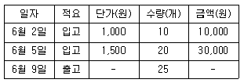
- 1,500원
- 2,000원
- 2,500원
- 3,000원
- 3,500원
(정답률: 62%)
10. 전자상거래를 이용한 기업소모성자재(MRO)에 관한 설명으로 옳은 것은?
- MRO의 주된 구매품목은 생산활동과 직접 관련되는 원자재이다.
- MRO사업자는 구매 대상 품목을 표준화할 필요가 없다.
- MRO는 Maintenance, Resource & Operation의 약어이다.
- MRO사업자는 구매자에게 신뢰성 있는 제품정보를 제공하기 위하여 공급업체를 철저히 관리해야 한다.
- MRO사업자는 공급업체별로 각각 데이터베이스를 구축한다.
(정답률: 40%)
11. SCM기법 중 하나인 CPFR(Collaborative Planning, Forecasting & Replenishment)을 도입하는 기업들이 가장 먼저 해야 할 일은?
- 주문발주
- 협업관계 개발
- 판매예측 실시
- 공동 비즈니스계획 수립
- 주문예측 실시
(정답률: 41%)
12. 공급사슬관리(SCM: Supply Chain Management) 도입의 필요성에 관한 설명으로 옳지 않은 것은?
- 기업활동이 글로벌화되면서 공급사슬의 지리적 거리와 리드타임이 길어지고 있기 때문이다.
- 기업 간 정보의 공유와 협업으로 채찍효과(bullwhip effect)를 감소시킬 수 있기 때문이다.
- 정보의 왜곡, 제품수명주기의 단축 등 다양한 요인으로 수요의 불확실성이 증대되기 때문이다.
- 제조기업들은 노동생산성 향상을 위하여 단순기능제품의 대량생산방식을 추구하고 있기 때문이다.
- 기업내부의 조직ㆍ기능별 관리만으로는 경쟁력 확보가 어렵기 때문이다.
(정답률: 66%)
13. 다음 공급사슬 성과지표 중 고객에게 정시에, 완전한 수량으로, 손상 없이, 정확한 문서와 함께 인도되었는지의 여부를 평가하는 성과지표는?
- 현금화 사이클 타임(cash-to-cash cycle time)
- 주문충족 리드타임(order fulfillment lead time)
- 총공급사슬관리비용(total supply chain management cost)
- 완전주문충족(율)(perfect order fulfillment)
- 공급사슬 대응시간(supply chain response time)
(정답률: 59%)
14. 택배수요에 영향을 미치는 유통산업의 환경 및 유통채널 변화에 관한 설명으로 옳지 않은 것은?
- 온라인과 오프라인이 연결되어 거래가 이루어지는 O2O(Online to Offline) 상거래가 증가하고 있다.
- 오프라인 매장에서 제품을 살핀 후 실제 구매는 온라인에서 하는 쇼루밍(showrooming)이 증가하고 있다.
- 온라인에서 제품을 먼저 살펴보고 실제 구매는 오프라인 매장에서 하는 역쇼루밍(reverse-showrooming)도 발생하고 있다.
- O2O 상거래는 ICBM(IoT, Cloud, Big data, Mobile) 기반의 정보통신기술이 융합되어 발전하고 있다.
- 유통기업들은 환경변화에 대응하기 위하여 유통채널을 옴니채널(omni channel)에서 다채널로 전환하고 있다.
(정답률: 61%)
15. 성공적인 물류관리 실현을 위한 경영활동에 관한 설명으로 옳지 않은 것은?
- 물류관리의 중요성이 강조됨에 따라, 일부 기업에서는 판매와 생산부문까지 총괄하는 물류담당 임원(CLO: Chief Logistics Officer) 제도를 도입하고 있다.
- 구매활동은 물류, 생산, 마케팅활동과는 독립적으로 수행된다.
- 화주기업들은 경쟁우위 확보를 위해 물류기업과 전략적 제휴를 맺는 사례가 있다.
- 물류환경은 공급자 중심에서 소비자 중심으로 전환되고 있다.
- 생산부문의 원가절감이 한계에 달한 기업들은 물류부문에서 원가절감활동을 강화하고 있다.
(정답률: 71%)
16. 물류활동의 기능에 관한 설명으로 옳지 않은 것은?
- 수ㆍ배송: 물자를 효용가치가 낮은 장소에서 높은 장소로 이동시켜 물자의 효용가치를 증대시키기 위한 물류활동
- 하역: 각종 운반수단에 화물을 싣고 내리는 것과 보관장소나 시설에서 화물을 운반, 입고, 분류, 출고하는 등의 작업과 이에 부수적인 작업을 총칭하는 물류활동
- 보관: 물류활동에 관련된 정보를 제공하여 물류관리의 모든 기능을 연결시켜줌으로써 종합적인 물류관리의 효율을 향상시키는 물류활동
- 포장: 물자의 수ㆍ배송, 보관, 거래, 사용 등에 있어서 그 가치 및 상태를 유지하기 위해 적절한 재료, 용기 등을 사용하여 보호하는 물류활동
- 유통가공: 물자의 유통과정에서 이루어지는 제품의 단순한 가공, 재포장, 조립, 절단 등의 물류활동
(정답률: 60%)
17. 가격파괴형 소매형태 중 직매입한 상품을 정상 판매한 이후 남은 비인기상품과 이월상품 등을 정상가보다 저렴하게 판매하는 곳은?
- 카테고리 킬러(Category Killer)
- 아울렛(Outlet Store)
- 기업형 슈퍼마켓(Super SuperMarket)
- 편의점(Convenience Store)
- 하이퍼마켓(Hyper Market)
(정답률: 64%)
18. 2008년에 개정된 정부의 기업물류비 산정지침상의 물류비 과목분류 중 지급형태별 구분에 해당하는 비용항목으로 옳은 것은?
- 위탁물류비: 물류활동의 일부 또는 전부를 타사에 위탁하여 수행함으로써 소비된 비용
- 조달물류비: 물자의 조달처로부터 운송되어 매입자의 보관창고에 입고, 관리되어 생산공정에 투입되기 직전까지의 물류활동에 따른 비용
- 사내물류비: 매입물자의 보관창고에서 완제품 등의 판매를 위한 장소까지의 물류활동에 따른 비용
- 판매물류비: 생산된 완제품 또는 매입한 상품을 판매창고에서 보관하는 활동부터 고객에게 인도될 때까지의 비용
- 역(reverse)물류비: 회수물류비, 폐기물류비, 반품물류비로 세분화하며, 판매된 상품의 반품과정에서 발생하는 운송, 검수, 분류, 보관, 하역 등의 비용
(정답률: 48%)
19. 물류의 정의에 관한 설명으로 옳은 것을 모두 고른 것은?
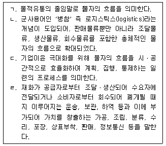
- ㄱ, ㄴ, ㄷ
- ㄱ, ㄴ, ㄹ
- ㄱ, ㄷ, ㄹ
- ㄴ, ㄷ, ㄹ
- ㄱ, ㄴ, ㄷ, ㄹ
(정답률: 66%)
20. 물류비를 관리하는 목적으로 옳지 않은 것은?
- 물류관리의 기본 척도로 활용된다.
- 물류활동의 계획, 관리, 실적 평가에 활용된다.
- 물류비관리시스템 구축 자체가 물류비를 절감한다.
- 물류활동의 문제점을 도출하고 개선하여 기업의 물류비 절감 및 생산성 향상을 도모한다.
- 물류활동에 대한 비용정보를 파악하여 기업 내부의 합리적인 의사결정을 위한 정보를 제공한다.
(정답률: 65%)
21. X, Y축의 양방향으로 데이터를 배열시켜 평면화한 점자식 또는 모자이크식 코드를 의미하는 2차원 코드에 관한 설명으로 옳지 않은 것은?
- 한국어뿐만 아니라 외국어도 코드화가 가능하다.
- 데이터 구성방법에 따라 단층형과 다층형으로 나뉜다.
- 1차원 바코드에 비해 좁은 영역에 많은 데이터를 표현할 수 있다.
- 2차원 코드로 Maxi Code, QR Code, Data Code, Code 16K 등이 있다.
- 문자, 숫자 등의 텍스트는 물론 그래픽, 사진 등 다양한 데이터를 담을 수 있다.
(정답률: 44%)
22. 다음에서 설명하는 RFID(Radio Frequency Identification) 태그의 유형(type)은?
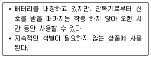
- 수동형(Passive type)
- 반수동형(Semi-passive type)
- 능동형(Active type)
- 분리형(Detachable type)
- 독립형(Independent type)
(정답률: 50%)
23. 빅데이터(Big data), 인공지능(AI: Artificial Intelligence), 사물인터넷(IoT:Internet of Things), 클라우드컴퓨팅(Cloud Computing) 등 다양한 핵심 기술의 융합을 기반으로 모든 것이 상호 연결되고, 보다 지능화된 사회로 변화 할 것이라는 개념인 4차 산업혁명은 최근 물류분야에서도 큰 이슈가 되고 있다. 이러한 4차 산업혁명시대의 주요 특징으로 옳지 않은 것은?
- 초연결성(Hyper-connected)의 사회
- 초지능화(Hyper-intelligent)된 시스템
- 자율화(Autonomous)된 장비
- 예측가능성 증가
- 공급자중심 경제
(정답률: 64%)
24. 물류관리 원칙에 관한 설명으로 옳지 않은 것은?
- 신뢰성: 생산, 유통, 소비에 필요한 물량을 원하는 시기와 장소에 공급하여 사용할 수 있도록 보장하는 원칙
- 단순성: 생산, 유통, 소비분야에서 물자가 요구되는 상황에 따라 물량, 장소, 시기의 우선순위별로 집중하여 제공하는 원칙
- 적시성: 필요한 수량만큼 필요한 시기에 공급하여 고객의 만족도를 향상시키고 재고비용을 최소화하는 원칙
- 경제성: 최소한의 자원으로 최대한의 물자공급 효과를 추구하여 물류관리비용을 최소화하는 원칙
- 균형성: 생산, 유통, 소비에 필요한 물자의 수요와 공급 및 조달과 분배의 균형을 유지하는 원칙
(정답률: 65%)
25. 물류정보시스템의 장점에 관한 설명으로 옳지 않은 것은?
- 물동량이 증가하여도 신속한 물류처리가 가능하다.
- 신속한 수주처리와 즉각적인 고객대응으로 판매기능을 강화할 수 있다.
- 판매와 재고정보가 신속하게 집약되므로 생산과 판매에 대한 조정이 가능하다.
- 재고 과ㆍ부족으로 발생하는 물류비용을 절감할 수 있다.
- 단거리 운송에 적합하고 운임은 탄력적으로 계산이 가능하다.
(정답률: 67%)
26. 많은 기업들이 물류공동화를 추진하고 있는 상황 속에서 물류공동화의 일반적인 장점에 관한 설명으로 옳지 않은 것은?
- 물류비용을 절감할 수 있다.
- 화물의 품질을 높일 수 있다.
- 수ㆍ배송 효율을 향상시킬 수 있다.
- 물류생산성을 향상시킬 수 있다.
- 안정적인 물류서비스를 제공할 수 있다.
(정답률: 69%)
27. 공동 수ㆍ배송의 효과에 관한 설명으로 옳지 않은 것은?
- 물류업무 인원을 증가시킬 수 있다.
- 환경오염을 줄일 수 있다.
- 운송수단의 활용도를 높일 수 있다.
- 공동 수ㆍ배송에 참여하는 기업의 물류비를 절감할 수 있다.
- 수ㆍ배송 효율을 향상시킬 수 있다.
(정답률: 72%)
28. 대전지역에 위치한 K물류기업에서 물류 업무의 효율을 높이기 위해 신규로 아래의 기능을 수행할 수 있는 물류정보시스템을 도입하기로 결정하였다. 다음은 무엇에 관한 설명인가?
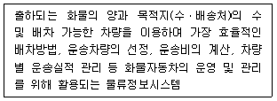
- TMS(Transportation Management System)
- TRS(Trunked Radio System)
- EDI(Electronic Data Interchange)
- Procurement System
- GIS-T(Geographical Information System for Transportation)
(정답률: 65%)
29. ( )에 들어갈 용어를 순서대로 나열한 것은?
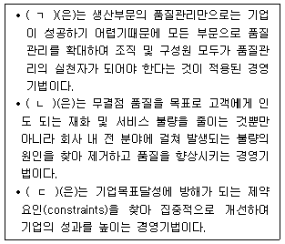
- ㄱ: TQM, ㄴ: 6시그마, ㄷ: TOC
- ㄱ: TQM, ㄴ: TOC, ㄷ: 6시그마
- ㄱ: 6시그마, ㄴ: TQM, ㄷ: TOC
- ㄱ: 6시그마, ㄴ: TOC, ㄷ: TQM
- ㄱ: TOC, ㄴ: TQM, ㄷ: 6시그마
(정답률: 57%)
30. 다음은 무엇에 관한 설명인가?
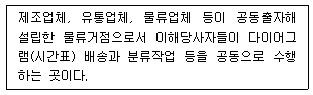
- 공동배송센터(Joint Distribution Center)
- 고층랙창고(High Stowage/Storage Rack Warehouse)
- 공공창고(Public Warehouse)
- 내륙기지(Inland Depot)
- 컨테이너야적장(Container Yard)
(정답률: 70%)
31. 상물분리의 경제적 효과에 관한 설명으로 옳은 것은?
- 물류거점을 통한 수ㆍ배송으로 수송경로가 단축되고 대형차량의 이용이 가능하므로 수송비가 증가한다.
- 지점과 영업소의 수주 통합으로 효율적 물류관리가 이루어지고, 리드타임(lead time)이 증가한다.
- 재고의 편재 또는 과부족을 해소하여 효율적 재고관리가 가능하다.
- 물류거점(물류센터 등)에서 하역의 기계화, 창고자동화 추진이 가능하므로 물류 효율성이 감소한다.
- 영업부는 제조활동에만 전념하여 도ㆍ소매업의 매출이 증대된다.
(정답률: 62%)
32. 물류시스템의 구축 목적에 관한 설명으로 옳지 않은 것은?
- 고객 주문 시 신속하게 물류서비스를 제공한다.
- 화물 분실, 오배송 등을 감소시켜 신뢰성 높은 운송기능을 수행할 수 있게 한다.
- 화물 변질, 도난, 파손 등을 감소시켜 신뢰성 높은 보관기능을 수행할 수 있게 한다.
- 물류서비스의 향상과 관계없이 물류비를 최소화하는 것이다.
- 하역의 합리화로 운송과 보관 등의 기능이 향상되도록 한다.
(정답률: 71%)
33. 표준파렛트 T11(1100 mm × 1100 mm)의 ISO표준컨테이너 적재 수량으로 옳지 않은 것은?
- 20피트 컨테이너에 1단적 적입하는 경우 8개를 적재할 수 있다.
- 20피트 컨테이너에 2단적 적입하는 경우 20개까지 적재할 수 있다.
- 40피트 컨테이너에 1단적 적입하는 경우 16개를 적재할 수 있다.
- 40피트 컨테이너에 2단적 적입하는 경우 40개를 적재할 수 있다.
- 45피트 컨테이너에 2단적 적입하는 경우 45개까지 적재할 수 있다.
(정답률: 40%)
34. 물류기업들이 성공을 위해 비전, 전략, 실행, 평가가 정렬되도록 균형성과표(BSC: Balanced Scorecard)를 도입한다. 이에 관한 설명으로 옳지 않은 것은?
- 균형성과표는 조직의 전략을 성과측정이라는 틀로 바꾸어서 전략을 실행할 수 있도록 도와준다.
- 균형성과표의 측정지표는 구성원들에게 목표달성을 위한 올바른 방향을 제시해 준다.
- 균형성과표는 재무 관점, 고객 관점, 내부 프로세스 관점, 학습과 성장 관점에서 성과지표를 설정한다.
- 균형성과표는 성과측정, 전략적 경영관리, 의사소통의 도구로 사용된다.
- 균형성과표의 성공은 실무자의 노력보다 전적으로 경영자 및 관리자의 노력에 달려있다.
(정답률: 69%)
35. 물류회사 A를 창업한 김 사장은 사업계획을 검토하여 보니 연간 1천만 원의 고정비가 발생하고, 유통가공 개당 매출(수입)은 1만원, 유통가공 개당 변동비는 매출의 50 %로 조사되었다. A사 유통가공사업의 손익분기점 판매량은?
- 1,000개
- 1,500개
- 2,000개
- 2,500개
- 3,000개
(정답률: 61%)
36. 표준파렛트 T11과 표준파렛트 T12에 모두 적용되는 포장모듈치수(파렛트와 정합성을 유지하는 포장규격)로 짝지어진 것은?
- 1100 mm × 1100 mm, 1200 mm × 1000 mm
- 1100 mm × 550 mm, 1200 mm × 500 mm
- 600 mm × 500 mm, 500 mm × 300 mm
- 550 mm × 220 mm, 440 mm × 220 mm
- 366 mm × 366 mm, 220 mm × 220 mm
(정답률: 30%)
37. 지구온난화로 인하여 물류기업들은 녹색물류활동을 강화하고 있다. 온실가스와 녹색물류에 관한 설명으로 옳지 않은 것은?
- 온실가스는 이산화탄소(CO2), 메탄(CH4), 아산화질소(N2O), 수소불화탄소(HFCs), 과불화탄소(PFCs), 육불화황(SF6) 6가지 가스로 구성된다.
- 국토교통부는 친환경 물류활동을 하는 기업을 평가하여, 그 중 물류기업에 한정하여 우수녹색물류실천기업으로 인증하고 있다.
- 차량 급출발, 공회전, 급브레이크 밟기 등을 줄이는 것도 녹색물류활동의 하나이다.
- 물류에너지 목표관리제 협약 대상은 화물차 50대 이상 운행하는 물류기업과 연간 에너지 사용량이 1,200석유환산톤(TOE: Ton of Oil Equivalent) 이상인 화주기업이다.
- 우리나라는 2020년 국가온실가스감축목표를 온실가스배출전망치(BAU: Business As Usual) 대비 30 % 감축키로 하였고, ‘제1차 기후변화대응 기본계획 및 2030 국가온실가스감축 기본로드맵’에서는 2030년 목표로 BAU 대비 37 % 감축키로 하였다.
(정답률: 27%)
38. 우리 정부가 온실가스 감축효과가 큰 사업들을 평가하여 수립한 ‘2020 물류 분야 온실가스 감축 이행계획’에서 제시된 온실가스 수정감축목표치의 상위 1, 2위에 해당되는 사업을 모두 고른 것은?
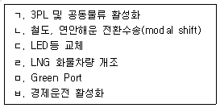
- ㄱ, ㄴ
- ㄴ, ㄷ
- ㄷ, ㄹ
- ㄹ, ㅁ
- ㅁ, ㅂ
(정답률: 62%)
39. 콜드체인(Cold Chain) 시장이 성장하고 있다. 콜드체인에 관한 설명으로 옳지 않은 것은?
- 콜드체인이란 대상 화물의 온도를 관리하는 공급사슬을 의미한다.
- 콜드체인 시장은 크게 기능에 따라 냉장 운송시장과 냉장 보관시장으로, 품목에 따라 식품콜드체인과 바이오ㆍ의약품 콜드체인으로 구분할 수 있다.
- 식품콜드체인관리 목적은 크게 식품 안전, 식품의 맛 유지, 식자재 폐기물 발생억제 등이다.
- 농산품콜드체인은 식품 특성에 따라 농장에서부터 소비자 식탁에 이르기까지 전과정의 온도 등을 관리하는 것을 의미한다.
- 우리나라 재래시장에서도 모든 농산물을 대상으로 콜드체인시스템을 적용하고 있다.
(정답률: 64%)
40. 경제활동이 글로벌화 되면서 각 기업들은 세계경영을 시도하고 이에 따라 국제표준을 따르는 추세에 있다. 국제표준의 명칭으로 옳지 않은 것은?
- ISO 10000 - 품질경영시스템
- ISO 14000 - 환경경영시스템
- ISO 22000 - 식품안전경영시스템
- ISO 26000 - 기업의 사회적 책임 표준
- ISO 28000 - 공급사슬보안경영시스템
(정답률: 35%)
2과목: 화물수송론
41. 정기선운송의 할증료 및 추가운임에 관한 설명으로 옳지 않은 것은?
- 혼잡할증료(congestion surcharge)는 항구에서 선박 폭주로 대기시간이 장기화될 경우 부과하는 할증료이다.
- 통화할증료(currency adjustment factor)는 화폐가치 변화에 의한 손실 보전을 위해 부과하는 할증료이다.
- 체화료(demurrage charge)는 무료장치기간(free time) 이내에 화물을 CY에서 반출하지 않을 경우 부과하는 요금이다.
- 지체료(detention charge)는 비상사태에 대비하여 부과하는 할증료이다.
- 항구변경료(diversion charge)는 선적 시 지정했던 항구를 선적한 후 변경 시 추가로 부과하는 운임이다.
(정답률: 58%)
42. 「한국해운조합법」상 한국해운조합이 수행하는 사업에 해당되는 것을 모두 고른 것은?
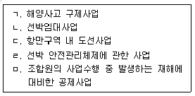
- ㄱ, ㄴ, ㄷ
- ㄱ, ㄴ, ㅁ
- ㄱ, ㄹ, ㅁ
- ㄴ, ㄷ, ㄹ
- ㄷ, ㄹ, ㅁ
(정답률: 39%)
43. 항공운송사업에 관한 설명으로 옳지 않은 것은?
- 항공운송사업은 생산탄력성이 매우 높다.
- 항공운송사업은 고정자산이 많아 고정비가 차지하는 비율이 비교적 높다.
- 항공운송사업은 고가의 항공기 구입 등 방대한 규모의 선행투자가 필요하다.
- 항공운송사업의 운송 서비스는 재고로 저장할 수 없는 특성이 있다.
- 항공운송사업은 조종사, 객실승무원, 정비사, 운항관리사 등 전문 인력이 필요하다.
(정답률: 50%)
44. 항공기의 중량에 관한 설명으로 옳지 않은 것은?
- 자체중량(empty weight)은 기체구조, 엔진, 고정 장비 및 내부 장비 등의 중량이다.
- 운항중량(operating weight)은 승무원, 엔진의 윤활유, 여객 서비스용품, 식음료 등의 중량이다.
- 유상중량(payload)은 항공기에 탑재한 유상 여객, 화물, 우편물 등의 중량이다.
- 착륙중량(landing weight)은 이륙중량에서 비행 중에 소비된 식음료 중량을 뺀 중량이다.
- 이륙중량(take-off weight)은 항공기가 이륙할 때 총중량으로 최대이륙중량을 초과할 수 없다.
(정답률: 47%)
45. 운송의 장소적 효용에 관한 설명으로 옳지 않은 것은?
- 운송은 생산과 소비의 기능을 유기적으로 분담하는 것을 촉진한다.
- 운송은 원격지 간 생산과 판매를 촉진하여 유통의 범위와 기능을 확대한다.
- 운송은 지역 간 유통을 활성화시켜 재화의 가격조정과 안정을 도모한다.
- 운송은 자원과 자본을 효율적으로 배분하고 회전율을 제고한다.
- 운송은 재화의 일시적 보관기능을 수행한다.
(정답률: 35%)
46. 화물자동차 운수사업에 관한 설명으로 옳지 않은 것은?
- 화물자동차 운송사업은 일반화물자동차 운송사업, 특수화물자동차 운송사업, 용달화물자동차 운송사업으로 구분된다.
- 화물자동차 운수사업이란 화물자동차 운송사업, 화물자동차 운송주선사업 및 화물자동차 운송가맹사업을 말한다.
- 화물자동차 운송사업은 트럭 1대만으로 허가기준을 충족하기 때문에 소규모로 운영이 가능하다.
- 화물자동차 운송주선사업은 다른 사람의 요구에 응하여 유상으로 화물운송계약을 중개ㆍ대리하거나 화물자동차 운송사업 또는 화물자동차 운송가맹사업을 경영하는 자의 화물 운송수단을 이용하여 자기 명의와 계산으로 화물을 운송하는 사업을 말한다.
- 화물자동차 운송가맹사업의 허가기준 대수는 500대 이상(운송가맹점이 소유하는 화물자동차 대수를 포함하되, 8개 이상의 시ㆍ도에 각각 50대 이상 분포되어야함)이다.
(정답률: 19%)
47. 다음은 국제택배에 관한 내용이다. ( )에 들어갈 내용을 순서대로 나열한 것은?
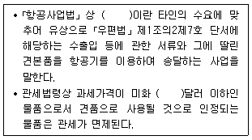
- 상업서류송달업, 200
- 상업서류송달업, 250
- 상업서류송달업, 300
- 국제특송업, 250
- 국제특송업, 300
(정답률: 27%)
48. 우리나라 운송사업의 실태에 관한 설명으로 옳지 않은 것은?
- 공로운송업체는 영세한 소형업체가 많다.
- 철도운송에 비해 육상운송이 발달되어 있다.
- 복합운송의 발달로 컨테이너 연안운송이 활발히 이루어지고 있다.
- 파렛트 보급 확대로 하역(상차 및 하차 포함)의 효율화가 진전되고 있다.
- 전체 물류비 중 화물운송비가 가장 높은 비중을 차지하고 있다.
(정답률: 47%)
49. 북서코너법(north-west corner method)과 보겔추정법(Vogel's approximation method)을 적용하여 총운송비용을 구할 때 각각의 방식에 따라 산출된 총운송비용의 차이는? (단, 공급지에서 수요지까지의 톤당 운송비는 각 셀의 우측 상단에 제시되어 있음)
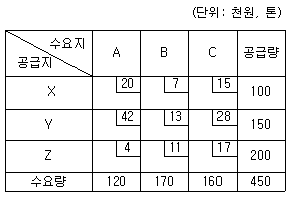
- 1,190,000원
- 1,370,000원
- 2,560,000원
- 2,830,000원
- 2,920,000원
(정답률: 42%)
50. 철도운송의 특징으로 옳지 않은 것은?
- 운송 서비스의 완결성을 지니고 있다.
- 계획운행이 가능하다.
- 장거리 운송과 대량화물의 운송에 적합하다.
- 안전도가 높고 친환경적인 운송수단이다.
- 전국적인 네트워크를 보유하고 있다.
(정답률: 60%)
51. 「철도사업법」및「철도산업발전기본법」상 용어에 관한 설명으로 옳지 않은 것은?
- 사업용철도란 다른 사람의 수요에 따른 영업을 목적으로 하지 아니하고 자신의 수요에 따라 특수목적을 수행하기 위하여 설치하거나 운영하는 철도를 말한다.
- 철도사업이란 다른 사람의 수요에 응하여 철도차량을 사용하여 유상으로 여객이나 화물을 운송하는 사업을 말한다.
- 철도운수종사자란 철도운송과 관련하여 승무 및 역무서비스를 제공하는 직원을 말한다.
- 철도사업자란 한국철도공사 및 철도사업 면허를 받은 자를 말한다.
- 선로란 철도차량을 운행하기 위한 궤도와 이를 받치는 노반 또는 공작물로 구성된 시설을 말한다.
(정답률: 50%)
52. 다음은「선박법」에 의한 소형선박의 정의이다. ( )에 알맞은 숫자를 순서대로 나열한 것은?
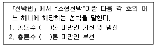
- 20, 50
- 20, 100
- 20, 200
- 40, 100
- 40, 200
(정답률: 32%)
53. 450 kg의 화물을 한국 인천에서 미국 시카고까지 항공운송하려 한다. 이 때 부과되는 항공 운임은?
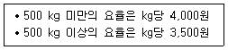
- 1,575,000원
- 1,687,500원
- 1,750,000원
- 1,800,000원
- 2,000,000원
(정답률: 23%)
54. 운송시장의 환경변화에 해당하지 않는 것은?
- 화주의 요구가 고도화ㆍ다양화되고 있다.
- 보안 및 환경관련 규제가 완화되고 있다.
- 운송화물이 다품종ㆍ소량화되고 있다.
- 운송시장의 경쟁이 심화되고 있다.
- 전자상거래가 증가하고 있다.
(정답률: 59%)
55. 다음과 같은 조건에서 공로와 철도운송의 경제효용거리 분기점은?
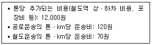
- 200 km
- 220 km
- 240 km
- 260 km
- 280 km
(정답률: 58%)
56. 외현 상부의 모양이 상갑판 부근에서 안쪽으로 굽어진 정도를 지칭하는 용어는?
- 텀블 홈(tumble home)
- 현호(sheer)
- 플레어(flare)
- 캠버(camber)
- 선저경사(rise of floor)
(정답률: 22%)
57. 다음 네트워크에서 7지점의 물류 창고를 모두 연결하는 도로를 개설하려 한다. 최소로 필요한 도로 연장은? (단, 각 구간별 숫자는 거리(km)를 나타냄)
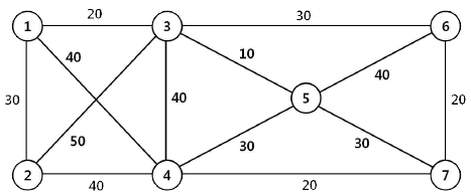
- 120 km
- 130 km
- 140 km
- 150 km
- 160 km
(정답률: 21%)
58. 택배표준약관(공정거래위원회 표준약관 제10026호)의 내용에 관한 설명으로 옳지 않은 것은?
- 운송물이 포장당 50만원을 초과하거나 운송상 특별한 주의를 요하는 것일 때에는 사업자는 할증요금을 청구할 수 있다.
- 사업자는 운송물 1포장의 가액이 300만원을 초과하는 경우 운송물의 수탁을 거절할 수 있다.
- 고객이 운송장에 운송물의 가액을 기재하지 않은 경우 사업자의 손해배상한도액은 50만원으로 하되, 운송물의 가액에 따라 할증요금을 지급하는 경우의 손해배상한도액은 각 운송가액 구간별 운송물의 최고가액으로 한다.
- 운송물의 일부 멸실 또는 훼손에 대한 사업자의 손해배상책임은 수하인이 운송물을 수령한 날로부터 21일 이내에 그 일부 멸실 또는 훼손에 대한 사실을 사업자에게 통지를 발송하지 아니하면 소멸한다.
- 운송장에 인도예정일의 기재가 없는 도서 및 산간벽지의 경우 운송장에 기재된 운송물 수탁일로부터 3일 이내에 운송물을 인도한다.
(정답률: 38%)
59. 배송센터 L로부터 모든 수요지점 1 ～ 6까지의 최단 경로 네트워크를 구성하였을 때, 구성된 네트워크의 전체 거리는? (단, 각 구간별 숫자는 거리(km)를 나타냄)
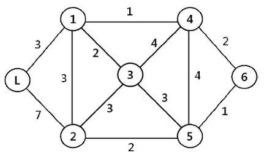
- 11 km
- 12 km
- 13 km
- 14 km
- 15 km
(정답률: 24%)
60. 수송수요모형에 관한 설명으로 옳은 것은?
- 화물발생 모형 중에는 원단위법, 성장률법, 성장인자법이 있다.
- 화물분포 모형 중에는 중력모형과 로짓모형이 있다.
- 수단분담 모형 중에는 통행단모형과 엔트로피극대화모형이 있다.
- 통행배정 모형 중에는 반복배정법과 분할배정법이 있다.
- 교통망 평형배정법은 용량비제약모형이다.
(정답률: 34%)
61. 우리나라 연안해운의 활성화 방안에 관한 설명으로 옳지 않은 것은?
- 선사와 화주 간 지속적인 관계 개선 및 서비스 향상을 통한 진정한 의미의 장기용선계약 체결이 필요하다.
- 연안 선사를 위한 실효성 있는 선박금융기법 개발을 통해 연안 선사의 경영합리화 추진이 필요하다.
- 연안 해운은 육상운송수단에 비해 친환경적인 운송수단으로 세제상의 지원이 필요하다.
- 현행 연안운송사업의 등록기준은 선박 3척 이상으로 규정되어 있어 등록 기준의 완화가 필요하다.
- 선복량 과잉을 방지하고 적정 선박량의 유지를 위한 방안이 필요하다.
(정답률: 43%)
62. 열차페리 운송방식은 해상운송과 철도운송이 가지는 장점을 효과적으로 접목시킨 복합일관운송 방식이다. 열차페리 운송의 장점으로 옳지 않은 것은?
- 하역처리의 빈도가 감소된다.
- 포장의 간이화에 따른 비용이 절감된다.
- 손해발생시 책임소재가 명확하다.
- 항만하역시간의 단축이 가능하다.
- 파손위험의 발생이 저하된다.
(정답률: 48%)
63. A 플랜트에서 B 지점까지 파이프라인을 통하여 가스를 보내려 한다. 보낼수 있는 최대 가스량은? (단, 각 구간별 숫자는 파이프라인의 용량을 톤으로 나타냄)
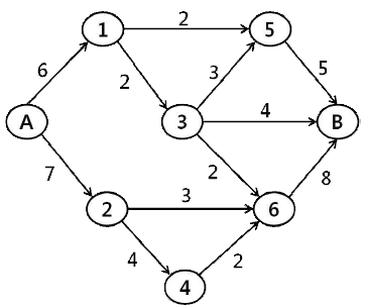
- 9톤
- 10톤
- 11톤
- 12톤
- 13톤
(정답률: 42%)
64. 항공화물 운송에 필요한 지상조업장비의 하나로 적재작업이 완료된 항공화물의 단위탑재용기를 터미널에서 항공기까지 견인차에 연결하여 수평 이동하는 장비는?
- 하이 로더(high loader)
- 포크리프트 트럭(forklift truck)
- 트랜스포터(transporter)
- 달리(dolly)
- 셀프 프로펠드 컨베이어(self propelled conveyor)
(정답률: 36%)
65. 철도화물을 운송할 경우 화차취급 운송에 관한 설명으로 옳지 않은 것은?
- 화물을 대절한 화차단위로 운송한다.
- 운임은 화차를 기준으로 정하여 부과한다.
- 일반화물의 단거리 운송에 많이 이용한다.
- 발ㆍ착역에서의 양ㆍ하역작업은 화주책임이다.
- 특대화물, 위험물 등의 경우에는 할증제도가 있다.
(정답률: 54%)
66. 화물자동차의 운송원가 계산은 운송특성에 맞는 합리적 기준을 설정하고 그 기준에 따른 표준원가를 계산하여야 한다. 운송원가 계산에 관한 설명으로 옳지 않은 것은?
- 고정비는 화물자동차의 운송거리 등과 관계없이 일정하게 발생하는 비용을 말한다.
- 변동비용은 운송거리, 영차거리, 운송 및 적재량 등에 따라 변동되는 원가를 말한다.
- 고정비 대상항목으로는 감가상각비, 세금과 공과금, 인건비 등이 있다.
- 변동비는 운전기사의 운전기량에 따라 차이가 발생할 수 있다.
- 변동비 대상항목으로는 연료비, 광열수도료, 복리후생비 등이 있다.
(정답률: 36%)
67. 수출되는 FCL 화물의 해상운송 업무와 관련하여 필요한 서류들을 업무흐름의 순서대로 나열한 것은?
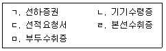
- ㄴ - ㄷ - ㅁ - ㄹ - ㄱ
- ㄴ - ㄷ - ㄹ - ㄱ - ㅁ
- ㄷ - ㅁ - ㄴ - ㄱ - ㄹ
- ㄷ - ㄴ - ㄹ - ㄱ - ㅁ
- ㄷ - ㄴ - ㅁ - ㄹ - ㄱ
(정답률: 51%)
68. 화물자동차운송정보시스템에 관한 설명으로 옳지 않은 것은?
- ITS는 도로와 차량, 사람과 화물을 정보네트워크로 연결하여 교통체증의 완화와 교통사고의 감소, 환경문제의 개선 등을 실현할 수 있는 시스템이다.
- GIS-T는 디지털 지도에 각종 정보를 연결하여 관리하고 이를 분석, 응용하는 시스템의 통칭이다.
- AVLS는 위성으로부터 받은 신호로 이동체의 위치 및 이동상태를 파악하여 차량의 최적 배치 및 파견, 실태파악 및 분석 안내, 통제, 운영할 수 있는 작업들을 지능화한 시스템이다.
- TRS는 중계국에 할당된 다수의 주파수 채널을 여러 사용자들이 공유하여 사용하는 무선통신서비스이다.
- VTS는 화물자동차의 최종 배송지에 대한 최적 운송경로를 검색하는 운송경로시스템이다.
(정답률: 37%)
69. 화물자동차의 제원에 관한 설명으로 옳은 것은?
- 최대적재량은 실질적으로 적재운행할 수 있는 화물의 총량으로 도로법령상 적재가능한 축하중 10톤과는 직접관계가 없다.
- 공차중량은 연료, 냉각수, 윤활유 등을 제외한 운행에 필요한 장비를 갖춘 상태의 중량을 말한다.
- 차량 총중량은 승차정원을 제외한 화물 최대적재량 적재시의 자동차 전체중량이다.
- 축하중은 차륜이 지나는 접지 면에 걸리는 전체 차축하중의 합이다.
- 승차정원은 운전자를 제외한 승차 가능한 최대인원수를 말한다.
(정답률: 17%)
70. 다음 그림은 5개 지점을 연결하는 도로망이다. 어느 특정 상품에 대한 각 지점의 수요량은 각각 A지점 20톤, B지점 25톤, C지점 15톤, D지점 10톤, E지점 30톤이다. 수요량 가중치를 고려한 평균 운송거리를 최소화하는 위치에 배송센터를 설치하고자 할 때 최적 위치는? (단, 어느 지점에 배송센터를 설치할 경우 배송센터로부터 그 지점까지의 운송거리는 0으로 가정하고, 각 구간별 숫자는 거리(km)를 나타냄)
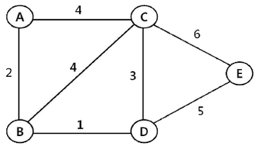
- A
- B
- C
- D
- E
(정답률: 20%)
71. 운송시스템의 합리화를 위하여 검토해야 할 사항으로 옳지 않은 것은?
- 트럭의 적재율을 향상시킨다.
- 공차율 극소화를 위하여 차량의 배송빈도를 높인다.
- 최적 운송수단을 선택한다.
- 최단 운송루트를 개발한다.
- 물류기기를 개선하고 정보시스템을 정비한다.
(정답률: 57%)
72. 다음은 운임에 따른 운송수요의 탄력성을 나타내는 수식이다. 수식에 들어갈 각 항목을 순서대로 나열한 것은?
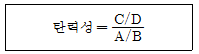
- A: 수요변화폭, B: 수요수준, C: 운임변화폭, D: 운임수준
- A: 수요수준, B: 수요변화폭, C: 운임수준, D: 운임변화폭
- A: 운임변화폭, B: 운임수준, C: 수요수준, D: 수요변화폭
- A: 운임수준, B: 운임변화폭, C: 수요수준, D: 수요변화폭
- A: 운임변화폭, B: 운임수준, C: 수요변화폭, D: 수요수준
(정답률: 26%)
73. 트레일러의 형상에 따른 설명으로 옳은 것을 모두 고른 것은?
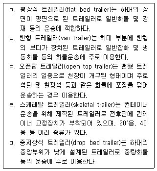
- ㅁ
- ㄴ, ㄷ
- ㄴ, ㅁ
- ㄱ, ㄷ, ㅁ
- ㄱ, ㄴ, ㄷ, ㄹ, ㅁ
(정답률: 39%)
74. 해상운송시 위험화물의 운송에 관한 설명으로 옳은 것은?
- IMDG 코드에서 위험물이라는 용어에는 이전의 위험화물을 담았던 세정되지 아니한 빈 포장용기는 포함되지 않는다.
- 위험물 선적 서류에 요구되는 위험물 명세정보에는 UN 번호, 품명, 급 및 등급, 포장 등급이 포함된다.
- IMDG 코드에는 위험물을 여러 등급으로 구분하고 있는데 1급(class 1)은 인화성 액체류이다.
- PSN(proper shipping name)은 위험물 운송 전문가 위원회가 위험물에 부여한 고유 번호이다.
- IMDG 코드에 별도의 명문 규정이 없는 한 위험물이 충전된 모든 포장화물에는 그 화물의 위험성을 나타내는 표찰을 부착하지 않아도 된다.
(정답률: 37%)
75. 공로 운송의 운영관리지표에 관한 설명으로 옳은 것은?
- 가동율은 일정기간 동안 화물차량을 실제 운행한 시간과 목표운행 시간과의 비율을 의미하는 지표로 목표가동일수를 실제가동일수로 나누어 산출한다.
- 회전율은 화물차량이 일정시간 내에 화물을 운송한 횟수를 말하는 지표로 평균 적재량을 총운송량으로 나누어 산출한다.
- 영차율은 전체 화물운송거리 중에서 실제로 얼마나 화물을 적재하고 운행했는지를 나타내는 지표로 적재거리를 총운행거리로 나누어 산출한다.
- 복화율은 편도운송을 한 후 귀로에 복화운송을 어느 정도 수행했느냐를 나타내는 지표로 편도운행횟수를 귀로시 영차운행횟수로 나누어 산출한다.
- 적재율은 화물자동차의 적재량 대비 실제 얼마나 화물을 적재하고 운행했는지를 나타내는 지표로 총운행적재율은 차량적재정량을 총운송량으로 나누어 산출한다.
(정답률: 38%)
76. 보세구역의 형태와 운영에 관한 설명으로 옳지 않은 것은?
- 세관검사장은 통관하려는 물품을 검사하기 위한 장소로서 세관장이 지정하는 지역으로 한다.
- 보세창고에는 외국물품이나 있c2통관을 하려는 물품을 장치한다.
- 보세전시장에서는 박람회, 전람회, 견본품 전시회 등의 운영을 위하여 외국물품을 장치ㆍ전시하거나 사용할 수 있다.
- 세관장은 보세판매장에서 판매할 수 있는 물품의 종류, 수량, 장치 장소 등을 제한할 수 있다.
- 세관장은 직권으로 또는 관계 중앙행정기관의 장이나 지방자치단체의 장, 그 밖에 종합보세구역을 운영하려는 자의 요청에 따라 무역진흥에의 기여 정도, 외국물품의 반입ㆍ반출 물량 등을 고려하여 일정한 지역을 종합보세구역으로 지정할 수 있다.
(정답률: 35%)
77. 한국 부산의 A 마트는 베트남 호치민의 B, C, D 업체로부터 매월 식품 및 식자재 약 30 CBM을 컨테이너로 수입하고 있다. 이 때 혼재방식과 운송형태가 바르게 짝지어진 것은?
- Buyer's consolidation, CY - CFS
- Seller's consolidation, CY - CFS
- Buyer's consolidation, CFS - CY
- Seller's consolidation, CFS - CFS
- Co-loading, CY - CY
(정답률: 58%)
78. 수송 문제를 해결하기 위하여 최소비용법(least-cost method)을 적용하고자 한다. 아래와 같은 운송조건 하에서 최소비용법을 적용할 때 첫번째 운송구간 할당 후, 두번째로 할당되는 운송구간과 할당량을 순서대로 나열한 것은? (단, 공급지에서 수요지까지의 운송비는 각 셀의 우측 상단에 제시되어 있음)
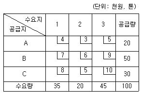
- A-1, 20톤
- B-1, 35톤
- B-2, 20톤
- C-1, 30톤
- C-2, 20톤
(정답률: 45%)
79. 택배의 특성에 관한 설명으로 옳은 것을 모두 고른 것은?
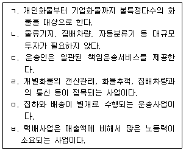
- ㄱ, ㄷ, ㄹ
- ㄱ, ㄹ, ㅂ
- ㄴ, ㄷ, ㅂ
- ㄱ, ㄷ, ㄹ, ㅂ
- ㄱ, ㄷ, ㄹ, ㅁ, ㅂ
(정답률: 49%)
80. 다음은 운송수단의 속도와 비용과의 관계를 설명한 것이다. ( )에 들어갈 내용을 순서대로 나열한 것은?
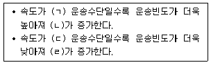
- ㄱ: 느린, ㄴ: 운송비, ㄷ: 느린, ㄹ: 보관비
- ㄱ: 느린, ㄴ: 보관비, ㄷ: 빠른, ㄹ: 운송비
- ㄱ: 느린, ㄴ: 운송비, ㄷ: 빠른, ㄹ: 보관비
- ㄱ: 빠른, ㄴ: 운송비, ㄷ: 느린, ㄹ: 보관비
- ㄱ: 빠른, ㄴ: 보관비, ㄷ: 느린, ㄹ: 운송비
(정답률: 59%)
3과목: 국제물류론
81. 최근 국제물류환경 변화에 관한 설명으로 적절하지 않은 것은?
- 기업의 국제경영활동 증가
- 물류서비스에 대한 수요의 고급화ㆍ다양화ㆍ개성화
- 글로벌시장의 수평적 분업화로 다품종 대량생산으로 변화 추세
- 통합된 국제물류체계 구축을 위한 경영자원의 필요성 증가
- 물류의 신속과 정확성이 중시되면서 물류관리가 기업의 성패요인으로 부각
(정답률: 61%)
82. 물류비의 구성요소가 아닌 것은?
- 하역비용
- 보관비용
- 포장비용
- 제품개발비용
- 물류정보ㆍ관리비용
(정답률: 61%)
83. 물류를 아웃소싱한 기업이 얻을 수 있는 장점으로 옳지 않은 것은?
- 전문업체와의 계약에 따라 물류서비스의 최적화 유지 가능
- 별도의 예비인력 확보 및 물류운영에 대한 부담 해소
- 고정 차량 부족 시에도 효율적인 물류업무 수행 가능
- 장기적인 측면에서 유능한 내부 물류전문인력 양성 가능
- 인력과 장비의 융통성 있는 활용 가능
(정답률: 59%)
84. 물류 관련 용어에 관한 설명으로 옳지 않은 것은?
- Anchorage: 선박이 닻을 내리고 접안하기 위해 대기하는 수역을 말한다. 선박이 안전하게 정박하기 위해서는 충분한 수면, 필요한 수심, 닻이 걸리기 쉬운 지질, 계선을 위한 부표설비 등이 갖추어져야 한다.
- Berth: 개항의 항계 안에서 폭발, 화재 및 오염 등을 사전에 봉쇄하여 항만교통의 안전을 유지하기 위하여 컨테이너 부두 내의 일정 지역을 별도로 설정하여 특수 소화장비 등을 비치한 장치장이다.
- Marshalling Yard: 접안선박이 입항하기 전에 접안선박의 적부계획에 따라 작업순서대로 컨테이너를 쌓아두는 장치장 역할을 한다. 그리고 양하된 컨테이너를 일시적으로 보관한 후 화주의 인도요구에 즉시 응할 수 있도록 임시 장치해 두는 일정한 공간이다.
- Apron: 하역작업을 위한 공간으로 Gantry Crane이 설치되어 컨테이너의 양하및 적하가 이루어지는 장소를 말한다.
- CFS: LCL 화물을 혼적하거나 분배하는 장소를 말한다. 이 때 컨테이너에 화물을 적입하는 작업은 vanning 또는 stuffing이라 표현하고 반대로 적출하는 작업은 devanning 또는 destuffing이라 부른다.
(정답률: 60%)
85. 국제물류주선업자(Freight Forwarder)의 역할이 아닌 것은?
- 운송수단의 수배
- 수출화물의 혼재작업
- House B/L 발행
- 운송관계서류 작성
- 해상보험증명서 발행
(정답률: 46%)
86. 제3자 물류에 비해 제4자 물류가 갖는 특성에 관한 설명으로 옳지 않은 것은?
- 위탁받은 물류활동을 중심으로 하는 제3자 물류와는 달리 전문성을 가지고 물류프로세스의 개선을 적극적으로 추구하여 세계수준의 전략, 기술, 경영관리를 제공하는 것을 목표로 한다.
- 전체 SCM상 다양한 물류서비스를 통합할 수 있는 최적의 위치에 있으므로 제3자 물류에 비해 SCM의 솔루션을 제시할 수 있고, 전체적인 공급사슬에 긍정적인 영향을 미칠 수 있다.
- IT 기반 통합적 물류서비스 제공보다는 오프라인 중심의 개별적ㆍ선별적 서비스를 지향한다.
- 제3자 물류와는 달리 물류전문업체, IT업체 및 물류컨설팅업체가 일련의 컨소시엄을 구성하여 가상물류 형태로 서비스를 제공한다.
- 제3자 물류보다 광범위하고 종합적이며 전문적인 물류서비스를 제공하여 더욱 높은 경쟁력을 확보할 수 있다.
(정답률: 61%)
87. 다음 설명에 해당하는 국제물류시스템의 형태는?
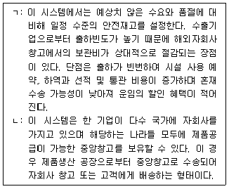
- ㄱ: 직송 시스템, ㄴ: 통과 시스템
- ㄱ: 고전적 시스템, ㄴ: 직송 시스템
- ㄱ: 고전적 시스템, ㄴ: 다국적(행) 창고 시스템
- ㄱ: 통과 시스템, ㄴ: 고전적 시스템
- ㄱ: 통과 시스템, ㄴ: 다국적(행) 창고 시스템
(정답률: 43%)
88. Hamburg Rules(1978)의 일부이다. ( )에 들어갈 용어로 옳은 것은?
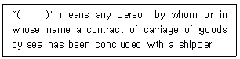
- Actual carrier
- Carrier
- Chief mate
- Master
- Consignee
(정답률: 48%)
89. A는 일반 건화물[중량 21,000 kg, 화물규격 910 cm(L) × 220 cm(W) × 225cm(H)]을 수출하고자 평소 거래하는 포워더와 운송계약을 체결하였다. 포워더가 이 화물을 컨테이너에 적재할 경우 가장 적합한 컨테이너 SIZE/TYPE은?
- 20' DRY CONTAINER
- 20' REEFER CONTAINER
- 40' DRY CONTAINER
- 20' OPEN TOP CONTAINER
- 40' FLAT RACK CONTAINER
(정답률: 39%)
90. 컨테이너 터미널에서 발생되는 비용으로서 선사 또는 포워드가 화주에게 청구하는 비용이 아닌 것은?
- Terminal Handling Charge
- Wharfage
- CFS Charge
- Ocean Freight
- Container Demurrage
(정답률: 29%)
91. 다음은 신용장상에서 요구하는 운송과 보험서류의 조건이다. 내용과 관련한 설명으로 옳지 않은 것은?
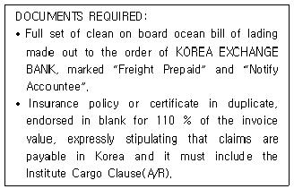
- 보험증권 또는 보험증명서 2부를 제시하여야 한다.
- 무사고선적해양선하증권 전(全)통을 요구하고 있다.
- 선하증권은 한국외환은행 지시식이어야 한다.
- 해상운임은 선불조건이며 착화통지처는 수출업자이다.
- 보험사고 시 손해에 대한 입증책임은 보험자에게 있다.
(정답률: 25%)
92. 용선에 의한 부정기선 운송에 관한 설명으로 옳지 않은 것은?
- 불특정 다수 화주의 소량화물, 공산품 등의 일반화물이나 컨테이너화물 등에 주로 이용된다.
- 운임은 물동량과 선복의 수요 공급에 의해 결정된다.
- 화주가 원하는 시기에 원하는 항로에 취항할 수 있다.
- 주로 단위화되지 않은 상태의 화물을 취급한다.
- 완전경쟁적 시장형태를 보이며, 소규모 조직으로도 영업이 가능하다.
(정답률: 53%)
93. 다음에서 설명하는 부정기선 운임의 종류는?
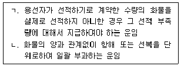
- ㄱ: Dead Freight, ㄴ: Lumpsum Freight
- ㄱ: Dead Freight, ㄴ: Pro-Rate Freight
- ㄱ: Back Freight, ㄴ: Lumpsum Freight
- ㄱ: Freight All Kinds, ㄴ: Back Freight
- ㄱ: Freight All Kinds, ㄴ: Pro-Rate Freight
(정답률: 59%)
94. 무역계약 조건에 관한 설명으로 옳은 것은?
- GMQ 품질조건은 곡물매매에서 많이 사용되며, 선적지에서 해당계절 출하품의 평균중등품을 표준으로 한다.
- Tale Quale의 조건은 인도물품의 품질이 계약과 일치하는지의 여부를 목적항에 서 물품을 양륙한 시점에 판정하는 조건이다.
- 양륙품질조건의 경우에는 매도인에게 품질수준의 미달 또는 운송 도중의 변질에 대한 입증책임이 귀속된다.
- 무역계약서의 수량조건에서 “100 M/T, but 3 % more or less at seller’s option” 이라 표현되었다면, 매도인은 98 M/T 수량을 인도해도 계약위반이 아니다.
- 과부족용인규정에 따른 정산 시 정산기준가격에 대한 아무런 약정을 하지 않았을 경우 도착일가격에 의해 정산하는 것이 일반적인 상관례이다.
(정답률: 44%)
95. 다음 그림에 제시된 복합운송 경로는?
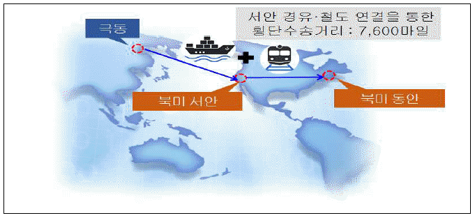
- American Land Bridge(ALB)
- Mini Land Bridge(MLB)
- Canadian Land Bridge(CLB)
- Interior Point Intermodal(IPI)
- Overland Common Point(OCP)
(정답률: 43%)
96. IncotermsⓇ 2010에 관한 설명으로 옳지 않은 것은?
- “공장인도규칙”(EXW)은 매도인이 계약물품을 자신의 영업장 구내 또는 기타 지정된 장소(예컨대 작업장, 공장, 창고 등)에서 매수인의 임의처분상태로 둘 때 인도하는 것을 의미한다.
- “운송인인도규칙”(FCA)은 인도가 매도인의 영업장 구내에서 이루어지면 매도인은 매수인이 제공한 운송수단 위에 물품을 적재할 의무가 있다.
- “터미널인도규칙”(DAT)에서 “터미널”은 부두, 창고, 컨테이너장치장(CY) 또는 도로ㆍ철도ㆍ항공화물의 터미널과 같은 장소를 포함하며, 지붕의 유무는 불문한다.
- “목적지인도규칙”(DAP)이란 물품이 지정목적지에서 도착운송수단에 실린 채 양하준비된 상태로 매수인의 임의처분 하에 놓이는 때에 매도인이 인도한 것으로 된다.
- “관세지급인도규칙”(DDP)이란 매도인이 지정된 목적지에서 수입통관을 이행하고, 도착된 운송수단으로부터 물품을 양하하여 매수인에게 인도하는 것을 의미한다.
(정답률: 37%)
97. 다음에서 설명하는 항공운송 관련 국제규범은?
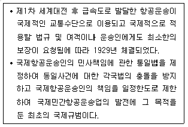
- 함부르크 규칙
- 몬트리얼 협정
- 바르샤바 조약
- 로테르담 규칙
- 과다라하라 조약
(정답률: 45%)
98. 다음에서 설명하는 보험은?
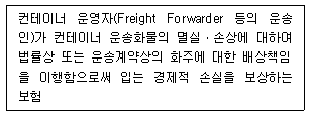
- Shipper’s Interest Insurance
- Container Owner’s Third Party Liability Insurance
- Protection and Indemnity Insurance
- Container Itself Insurance
- Container Operator’s Cargo Indemnity Insurance
(정답률: 34%)
99. 해상보험에서 피보험이익에 관한 설명으로 옳지 않은 것은?
- 피보험이익은 적법하여야 한다.
- 피보험이익은 보험계약을 체결할 당시 반드시 확정되어 있어야 한다.
- 피보험이익은 선적화물, 선박 등 피보험목적물에 대하여 특정인이 갖는 이해관계를 말한다.
- 해상보험계약에서 보호되는 것은 피보험목적물이 아니라 피보험이익이라 할 수 있다.
- 피보험이익은 경제적 이익 즉, 금전으로 산정할 수 있어야 한다.
(정답률: 36%)
100. IncotermsⓇ 2010의 주요 특징으로 옳지 않은 것은?
- 국제 및 국내 매매계약 모두에 적용할 수 있도록 사용가능성을 명시하고 있다.
- 당사자들이 합의하거나 관습적인 경우, 전자통신수단에 대해 서면통신과 동일한 효력을 부여하고 있다.
- 일부 규칙에서 매도인의 물품을 선적할 의무에 대한 대안으로서 “선적된 물품조달”도 가능하게 하였다.
- 물품 이동에 있어 보안에 대한 관심이 높아지면서 보안관련 정보를 확인하는데 매매당사자가 상호 협력하도록 의무를 부과하였다.
- FAS 규칙에서 물품의 인도가 본선의 난간을 통과한 시점에서 본선에 적재가 완료된 때로 변경되었다.
(정답률: 32%)
101. 항공화물운송장에 관한 설명으로 옳지 않은 것은?
- 원본 3통과 다수의 부본이 발행된다.
- 원칙적으로 송하인이 작성하도록 되어 있다.
- 기명식으로 발행되어 비유통성의 성격을 갖는다.
- 유가증권의 성격이 있다.
- 수취식으로 발행된다.
(정답률: 62%)
102. 해상손해에 관한 설명으로 옳지 않은 것은?
- 현실전손은 보험의 목적인 화물이 현실적으로 전멸한 상태로서, 예를 들면 화재로 인한 선박의 전소, 해수로 인해 고체로 변한 시멘트 등과 같이 보험의 목적이 멸실되어 상품의 가치가 완전히 없어진 것을 말한다.
- 추정전손은 현실전손이 아니나 정당한 위부의 통지 없이 피보험자가 보험자에게 전손에 대한 보험금을 청구함으로써 현실전손으로 전환되는 것이다.
- 공동해손이 성립되기 위해서는 선박과 화물에 동시에 위험이 존재하여야 한다. 따라서 어느 한 쪽 이해당사자의 안전을 위한 비용지출은 공동해손비용이 아니다.
- 공동해손으로 인정되기 위해서는 그 공동해손 행위가 합리적이어야 하며, 선박이나 적하에 대한 불합리한 행위는 공동해손으로 인정되지 않는다.
- 단독해손은 보험의 목적이 일부 멸실되거나 손상된 부분적인 손해에 대하여 손해를 입은 당사자가 단독으로 부담하는 손해이다.
(정답률: 51%)
103. 특정구간의 특정품목에 대하여 적용되는 요율로서 보통 일반화물요율에 대한 백분율로 할증(S) 또는 할인(R)되어 결정되는 항공화물 운임은?
- Commodity Classification Rate
- Specific Commodity Rate
- Bulk Unitization Charge
- General Cargo Rate
- Valuation Charge
(정답률: 33%)
104. 항해용선운송계약에 관한 설명으로 옳지 않은 것은?
- Stevedorage 부담과 관련하여 선적 시는 용선자가, 양륙 시는 선주가 부담하는 조건은 Free In(FI)이다.
- 하역 시작일로부터 끝날 때까지의 모든 기간을 정박기간으로 계산하는 방법은 Running Laydays이다.
- 초과정박일에 대하여 계약상 정박일수를 경과할 때 용선자가 선주에게 지급하는 약정금은 Despatch Money이다.
- 운송계약에 따라 화주가 운임 및 기타 부대경비를 지급하지 아니할 때 선주는 그 화물을 유치할 수 있는 권한이 있다.
- 기상조건이 하역 가능한 상태의 날만 정박기간에 산입하는 정박기간 표시방법은 Weather Working Days이다.
(정답률: 58%)
1⑤. 물류보안과 관련한 다음 설명에 해당하는 것은?
- Container Security Initiative
- ISPS Code
- C-TPAT
- AEO
- 10+2 rule
(정답률: 43%)
106. 항해용선계약서인 GENCON Form(1994)의 기재요령에 관한 설명으로 옳지 않은 것은?
- “Expected ready to load”란에는 본선의 선적가능예정일을 기재한다.
- “DWT all told on summer load line in metric tons”란에 하계 경화흘수선을 기준으로 한 재화중량톤수를 M/T로 표기한다.
- “General Average to be adjusted at”란에는 공동해손의 정산장소를 기재한다.
- “Cancelling date”란에는 해약선택권이 발생하는 날짜를 기재한다.
- “Brokerage commission and to whom payable”란에는 중개수수료와 이를 부담할 당사자를 기재한다.
(정답률: 19%)
107. 다음 상황에서 A가 이행해야 하는 관세법상 통관조치는?
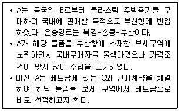
- 수입통관
- 수출통관
- 환적통관
- 반송통관
- 중계통관
(정답률: 19%)
108. 다음 설명에 해당하는 복합운송인의 책임체계는?
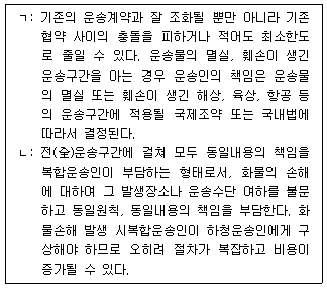
- ㄱ: Modified Uniform Liability System
ㄴ: Uniform Liability System - ㄱ: Uniform Liability System
ㄴ: Modified Uniform Liability System - ㄱ: Uniform Liability System
ㄴ: Network Liability System - ㄱ: Network Liability System
ㄴ: Modified Uniform Liability System - ㄱ: Network Liability System
ㄴ: Uniform Liability System
(정답률: 20%)
109. 무역에서는 거래당사자가 합의하는 바에 따라 다양한 조건이 약정될 수 있다. FOB, CIF와 같은 IncotermsⓇ 2010의 정형무역거래규칙이 포함되는 무역계약 조건은?
- Terms of Quality
- Terms of Quantity
- Terms of Price
- Terms of Packing
- Terms of Claim
(정답률: 33%)
110. 다음에서 설명하는 내용에 부합하는 선하증권은?
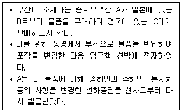
- Switch B/L
- Red B/L
- Transhipment B/L
- Surrender B/L
- Countersign B/L
(정답률: 58%)
111. 다음에서 설명하는 A물품이 보관될 수 있는 관세법상 보세구역은?
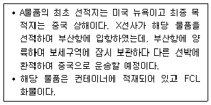
- 자유무역지역
- 지정장치장
- 일시양륙장
- 관세자유구역
- 임시장치장
(정답률: 30%)
112. Hague-Visby Rules(1968)에 관한 설명으로 옳지 않은 것은?
- 별도의 계약을 한다면 운송인은 화물의 선적, 취급, 선내작업, 운송, 보관, 관리 및 양하에 관해 협약에서 규정한 의무와 책임이 면제될 수 있다.
- 운송인은 선박의 운항 또는 선박의 관리에 관한 선장, 선원, 도선사의 행위나 해태, 또는 과실로 인한 손해에 대해 책임을 지지 않는다.
- 해상운송인은 부당한 이로(Deviation)나 불합리한 지연 없이 통상적이고 합리적인 항로로 항해를 수행할 묵시적 의무가 있다. 그러나 해상에서 인명 또는 재산을 구조하거나 이러한 구조를 위한 이로는 인정된다.
- 운송인의 책임한도를 표시한 통화단위는 IMF의 특별인출권(SDR)을 적용한다.
- 협약에서 말하는 선박은 해상운송에 사용되는 일체의 선박을 의미한다.
(정답률: 24%)
113. Hague Rules(1924)와 Hamburg Rules(1978)에 관한 설명으로 옳지 않은 것은?
- Hague Rules에 비해 Hamburg Rules의 운송인의 책임기간이 확대되었다.
- Hague Rules에서 열거한 운송인이나 선박의 면책리스트가 Hamburg Rules에서는 모두 폐지되고 제5조의 운송인 책임의 일반원칙에 의해 규정받게 되었다.
- Hague Rules에서는 지연손해에 대한 명문규정이 없었으나 Hamburg Rules에서 는 제5조에 이를 명확히 하였다.
- Hague Rules에 비해 Hamburg Rules의 운송인의 책임한도액이 인상되었다.
- Hague Rules에서 운송인 면책이었던 상업과실을 Hamburg Rules에서는 운송인의 책임으로 규정하고 있다.
(정답률: 22%)
114. 컨테이너를 이용하여 화물을 수출함에 있어 선사가 포워더에게 발행하는 서류는?
- Master B/L
- Forwarder’s Cargo Receipt
- Dock Receipt
- House B/L
- Shipping Request
(정답률: 48%)
115. 매도인과 매수인간에 보험과 관련해 별도의 계약이 없다면, 선적항과 목적항간의 해상보험을 매수인이 부보할 이유가 없는 IncotermsⓇ 2010 거래규칙을 모두 고른 것은?
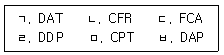
- ㄱ, ㄴ, ㄹ
- ㄱ, ㄷ, ㅂ
- ㄱ, ㄹ, ㅂ
- ㄴ, ㄷ, ㅁ
- ㄴ, ㄹ, ㅁ
(정답률: 40%)
116. 신용장통일규칙(UCP 600)에서 선하증권의 수리요건에 관한 설명으로 옳지 않은 것은?
- 선장의 이름을 표시하고 선장 또는 선장을 대리하는 지정대리인에 의하여 서명되어 있어야 한다.
- 본선적재표시에 의하여 물품이 신용장에 명기된 선적항에서 지정선박에 본선적재되었음을 표시하고 있어야 한다.
- 신용장이 환적을 금지하고 있는 경우에도 물품이 선하증권에 의하여 입증된 대로 컨테이너, 트레일러 또는 라쉬선에 적재된 경우에는 환적이 행해질 수 있다고 표시하고 있는 선하증권은 수리될 수 있다.
- 용선계약에 따른다는 어떠한 표시도 포함하고 있지 않아야 한다.
- 운송의 제조건을 포함하고 있는 선하증권이거나, 또는 운송의 제조건을 포함하는 다른 자료를 참조하고 있는 약식선하증권이어야 한다.
(정답률: 20%)
117. 복합운송증권(FIATA FBL)의 약관 중 다음 내용이 포함되어 있는 약관은?
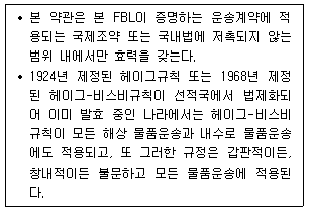
- Limitation of Freight Forwarder’s Liability
- Partial Invalidity
- Lien
- Paramount Clause
- Jurisdiction and Applicable Law
(정답률: 26%)
118. 다음에서 설명하는 서류는?
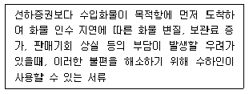
- L/G(Letter of Guarantee)
- D/O(Delivery Order)
- S/R(Shipping Request)
- M/R(Mate’s Receipt)
- L/I(Letter of Indemnity)
(정답률: 57%)
119. 소송과 비교한 상사중재의 특징으로 옳지 않은 것은?
- 소송과 비교하여 볼 때 그 비용이 저렴하다.
- 심리과정과 판정문이 공개되는 것을 원칙으로 한다.
- 우리나라에서 내려진 중재판정이 외국에서도 승인ㆍ집행될 수 있다.
- 단심제로 운영되므로 분쟁이 신속하게 해결될 수 있다.
- 분쟁 당사자가 중재인을 선정할 수 있으며 양당사자는 중재판정의 결과에 따라야 한다.
(정답률: 55%)
120. 다음 항공화물에 적용되는 운임은?
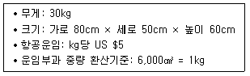
- US $80
- US $120
- US $150
- US $180
- US $200
(정답률: 60%)